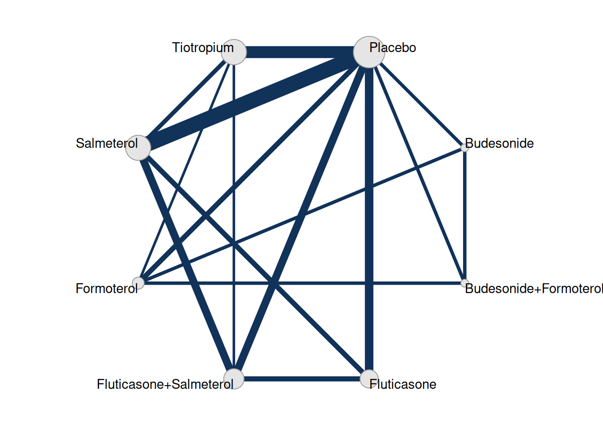
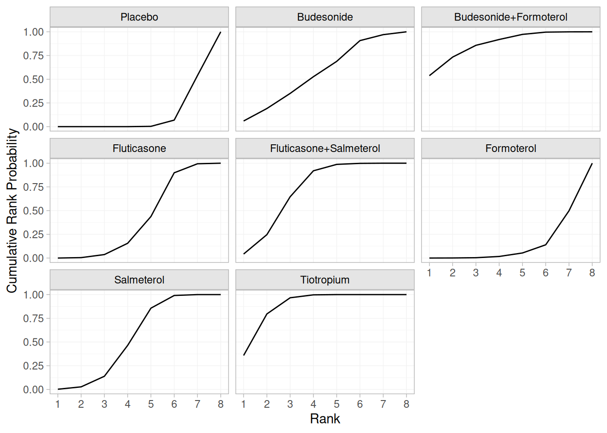
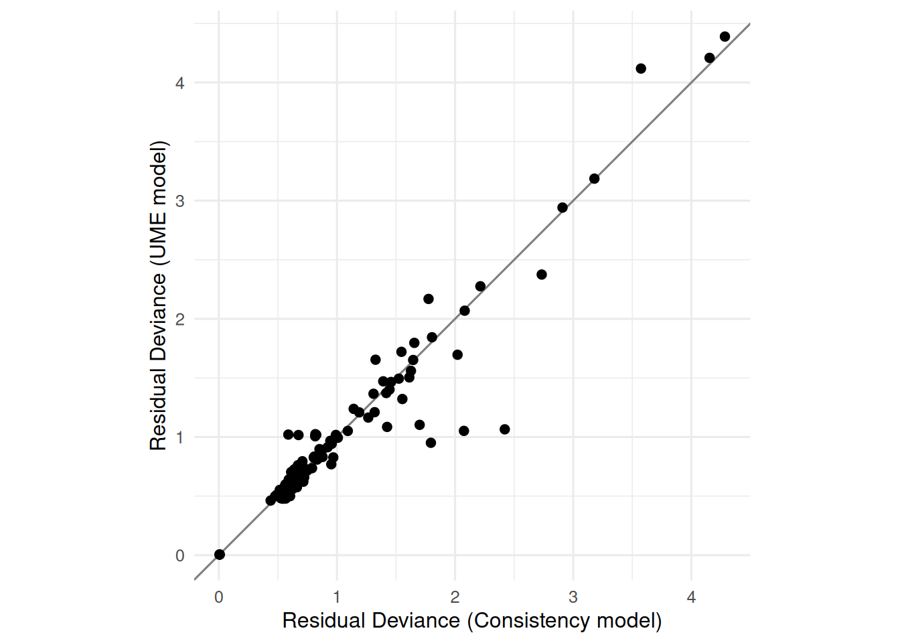

library(netmeta)
data(Baker2009)Comparative Effectiveness of Treatments for COPD: A Network Meta-Analysis Example
1 Overview
This vignette reproduces the main analyses discussed in the book chapter “Principles of meta-analysis and indirect treatment comparisons” (Debray et al. 2026).
Here, we focus on a case study evaluating the comparative effectiveness of maintenance inhaled therapies for chronic obstructive pulmonary disease (COPD).
The example is based on the systematic review by Baker et al. (Baker, Baker, and Coleman 2009), which identified 39 randomized controlled trials including 28,232 patients. These trials compared long-acting β₂-agonists (LABAs), tiotropium (TIO), inhaled corticosteroids (ICS), and combination ICS–LABA therapies with respect to exacerbation risk. The corresponding treatment network contains multiple closed loops, enabling both direct and indirect treatment comparisons. Unlike the COVID-19 example, this network provides an opportunity to assess local inconsistency across overlapping comparisons and to explore sources of heterogeneity and bias within a richer evidence structure.
2 Data Source
Trials were identified through a systematic literature search of the following databases: MEDLINE (1950 – October 2007), EMBASE (1990 – October 2007), CINAHL (1982 – October 2007), the Cochrane Central Register of Controlled Trials (third quarter 2007), as well as Web of Science (1994 – October 2007).
Inclusion criteria were:
- Randomized and controlled design (placebo or active comparator).
- Study population consisting of patients with chronic obstructive pulmonary disease (COPD).
- Evaluation of at least one of the following COPD drug classes:
- Inhaled corticosteroids (ICS)
- Tiotropium (TIO)
- Long-acting β₂-agonists (LABAs)
- Combination ICS–LABA therapy
- Reporting of outcomes related to COPD exacerbation frequency or mortality.
Data are available from the R package netmeta:
| study | year | id | treatment | exac | total |
|---|---|---|---|---|---|
| Llewellyn-Jones 1996 | 1996 | 1 | Fluticasone | 0 | 8 |
| Llewellyn-Jones 1996 | 1996 | 1 | Placebo | 3 | 8 |
| Boyd 1997 | 1997 | 2 | Salmeterol | 47 | 229 |
| Boyd 1997 | 1997 | 2 | Placebo | 59 | 227 |
| Paggiaro 1998 | 1998 | 3 | Fluticasone | 45 | 142 |
| Paggiaro 1998 | 1998 | 3 | Placebo | 51 | 139 |
The primary outcome was the occurrence of one or more episodes of COPD exacerbation, recorded as a binary variable (yes/no). The network compares five single-agent treatments—fluticasone, budesonide, salmeterol, formoterol, and tiotropium—and two combination therapies (fluticasone + salmeterol and budesonide + formoterol) against placebo. Importantly, the original authors treated the combination therapies as distinct interventions rather than decomposing them into their individual components.
3 Setting up the Network
We first define the network of interventions and visualize the geometry of available evidence.
library(multinma)
library(ggplot2)
net <- set_agd_arm(data = Baker2009,
study = study,
trt = treatment,
r = exac,
n = total)
plot(net, weight_edges = TRUE, weight_nodes = TRUE) +
theme(legend.position = "none")
4 Random-Effects Network Meta-Analysis
We first fit a random-effects model using the binomial likelihood with logit link. We use weakly informative priors for heterogeneity and relative effects.
library(dplyr)
nma_consistency <- nma(
net,
trt_effects = "random",
prior_trt = normal(scale = 5),
prior_het = half_normal(scale = 2.5),
refresh = 0
)To complement the relative treatment effects, we summarize the probability that each treatment ranks among the best options in reducing COPD exacerbations. Cumulative rank probabilities provide a visual summary of the likelihood that a given treatment occupies each possible rank position, with higher curves indicating a higher probability of superior performance. Figure 1 displays these probabilities for all treatments included in the network meta-analysis, using placebo as the reference.
db_rankprobs <- posterior_rank_probs(nma_consistency,
lower_better = TRUE,
cumulative = TRUE)
plot(db_rankprobs)

To complement the ranking results, we next assess the overall model fit and between‐study heterogeneity. Specifically, we extract the Deviance Information Criterion (DIC) and the estimated between‐study standard deviation (\(\tau\)) from the consistency model, which will later be compared with those from the UME model.
# Extract DIC
dic_consistency <- dic(nma_consistency)
# Extract tau (posterior mean)
tau_consistency <- summary(nma_consistency)$summary %>%
as.data.frame() %>%
filter(parameter == "tau") %>%
pull(mean)We find the following estimate for \(\tau\), the between-study standard deviation: 0.079. The DIC for this model is 158.8.
5 Assessing Inconsistency
To assess local inconsistency, we apply the node-splitting approach to each comparison with both direct and indirect evidence.
nma_inconsistency <- nma(
net,
consistency = "ume",
trt_effects = "random",
prior_trt = normal(scale = 5),
prior_het = half_normal(scale = 2.5),
refresh = 0
)We can again assess the overall model fit and between‐study heterogeneity, and compare it to the resuls from the consistency model:
# Extract DIC
dic_inconsistency <- dic(nma_inconsistency)
# Extract tau (posterior mean)
tau_inconsistency <- summary(nma_inconsistency)$summary %>%
as.data.frame() %>%
filter(parameter == "tau") %>%
pull(mean)
# Combine into a comparison data frame
model_comparison <- tibble::tibble(
Model = c("Consistency", "Inconsistency (UME)"),
Tau = c(tau_consistency, tau_inconsistency),
DIC = c(dic_consistency$dic, dic_inconsistency$dic)
)| Model | Tau | DIC |
|---|---|---|
| Consistency | 0.0791944 | 158.8097 |
| Inconsistency (UME) | 0.0807342 | 160.4020 |
To further explore model fit and potential inconsistency, we compared the residual deviance contributions from the consistency and UME models. Each point in the plot below represents the contribution of a study–treatment arm to the overall residual deviance. Points lying below the diagonal indicate observations that are better explained under the UME (inconsistent) model, suggesting potential sources of inconsistency.
# Extract residual deviance contributions from both models
resdev_cons <- dic_consistency$pointwise$agd_arm %>%
select(.study, .trt, resdev_cons = resdev)
resdev_ume <- dic_inconsistency$pointwise$agd_arm %>%
select(.study, .trt, resdev_ume = resdev)
# Merge by study and treatment
resdev_joined <- full_join(resdev_cons, resdev_ume,
by = c(".study", ".trt"))
# Plot comparison
ggplot(resdev_joined, aes(x = resdev_cons, y = resdev_ume)) +
geom_abline(intercept = 0, slope = 1, linetype = "solid", color = "grey50") +
geom_point(size = 2) +
coord_equal() +
theme_minimal(base_size = 12) +
labs(
x = "Residual Deviance (Consistency model)",
y = "Residual Deviance (UME model)"
)

Finally, we can identify data points with substantial differences in residual deviance between the two models:
resdev_joined %>%
filter(abs(resdev_cons - resdev_ume) > 1) %>%
as.data.frame() .study .trt resdev_cons resdev_ume
1 vanNoord 2005 Tiotropium 2.420773 1.064997
2 vanNoord 2005 Formoterol 2.074833 1.051790The results indicate that most studies fit both models similarly, with only the van Noord (2005) study – specifically the Tiotropium and Formoterol arms – showing improved fit under the UME model. This pattern points to possible local inconsistency associated with that study.
References
Baker, William L., Erica L. Baker, and Craig I. Coleman. 2009. “Pharmacologic Treatments for Chronic Obstructive Pulmonary Disease: A Mixed-Treatment Comparison Meta-Analysis.” Pharmacotherapy: The Journal of Human Pharmacology and Drug Therapy 29 (8): 891–905. https://doi.org/10.1592/phco.29.8.891.
Debray, Thomas P. A., Natalie Dennis, Dimitris Mavridis, Aurélie Bardet, and Sofia Dias. 2026. “Principles of Meta-Analysis and Indirect Treatment Comparisons.” In Comparative Effectiveness and Personalized Medicine Research Using Real-World Data, edited by T. P. A. Debray, T. L. Nguyen, and R. W. Platt. Boca Raton, FL: Taylor & Francis.